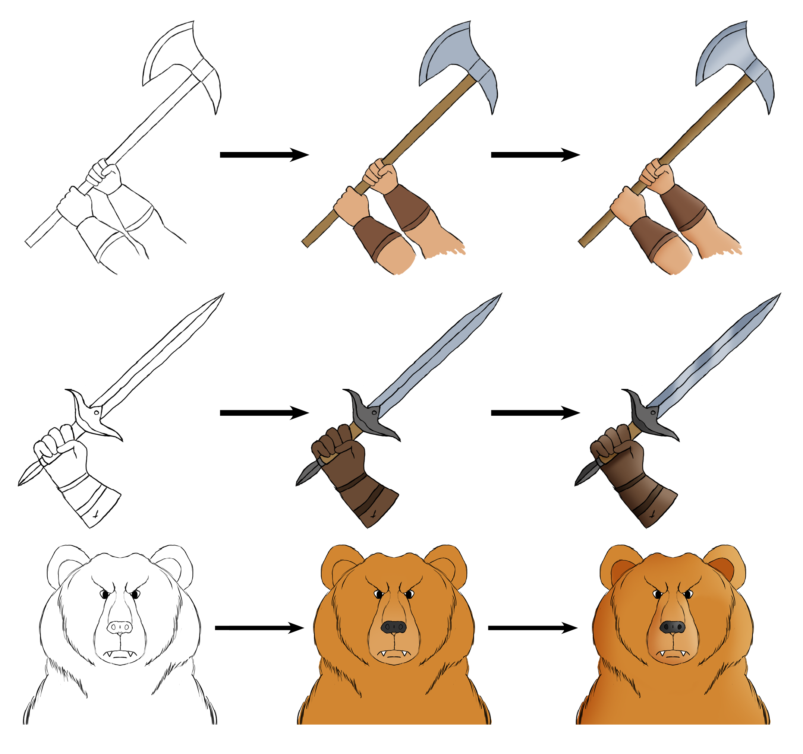
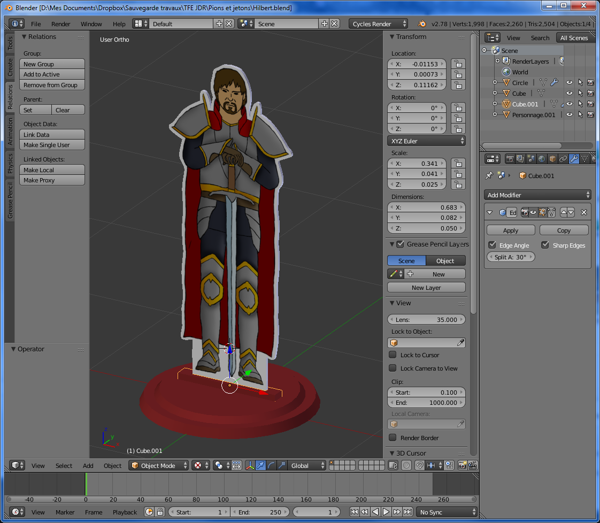

Une grande variété de cartes
Il existe plus de 40 variétés de cartes et de plus de 100 cartes pour tous les paquets confondus.
Des techniques, des équipements, des événements et les monstres.
Vivez l'aventure de quatre héros en quête vers l'acquisition de l'artéfact magique afin de sauver la race humaine. Le premier arrivé avec l'artéfact aura la gloire et la fortune du royaume.
Cependant, la récompense promise par le royaume pousse à la rivalité entre ces aventuriers.
Parcourez ces terres périlleuses, trouvez des techniques et équipements, faites faces aux monstres et événements dangereux et ramenez l'artéfact.
Il existe plus de 40 variétés de cartes et de plus de 100 cartes pour tous les paquets confondus.
Des techniques, des équipements, des événements et les monstres.

Entre 30 et 60 minutes de session de jeu voir même plus si l'aventure s'avère plus laborieuse.

Chaque joueur joue son propre personnage avec ses traits uniques et sa propre histoire.

Adobe Photoshop

Adobe Photoshop

Photoshop et Blender

Tabletop Simulator

Blender et Source Filmmaker

After Effect et Premiere Pro
Si vous possédez Tabletop Simulator, jouez-y dès maintenant en visitant la page Workshop du jeu!
La conception de mon plateau s'est faite en plusieurs étapes, d'abord j'ai créé les cases à l'aide d'Adobe Illustrator pour avoir de belles courbes tout au long des cases. Ensuite à l'aide de Blender, j'ai fait un rendu de l'herbe sur un fond transparent dont j'ai ensuite dupliqué sur tout le chemin pour avoir un résultat homogène et bien intégré au décor.
Les illustrations sont dessinées à la main à l'aide d'une tablette graphique Wacom Bamboo. Les coloriages sont faits sur un calque séparé et des ombres et lumières sont appliquées grâce à un calque en lumière tamisée à 75%.
Après avoir dessiné le personnage, j'ai créé une extrusion 3D via Photoshop qui me servira de modèle 3D pour Blender.
Ensuite, sur Blender, j'ai ajusté l'épaisseur de l'illustration et modélisé le socle où elle sera posée.